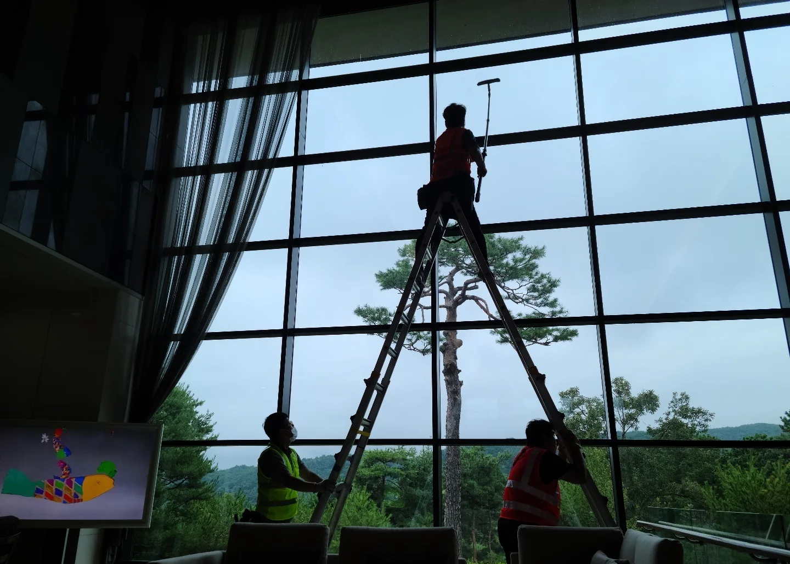
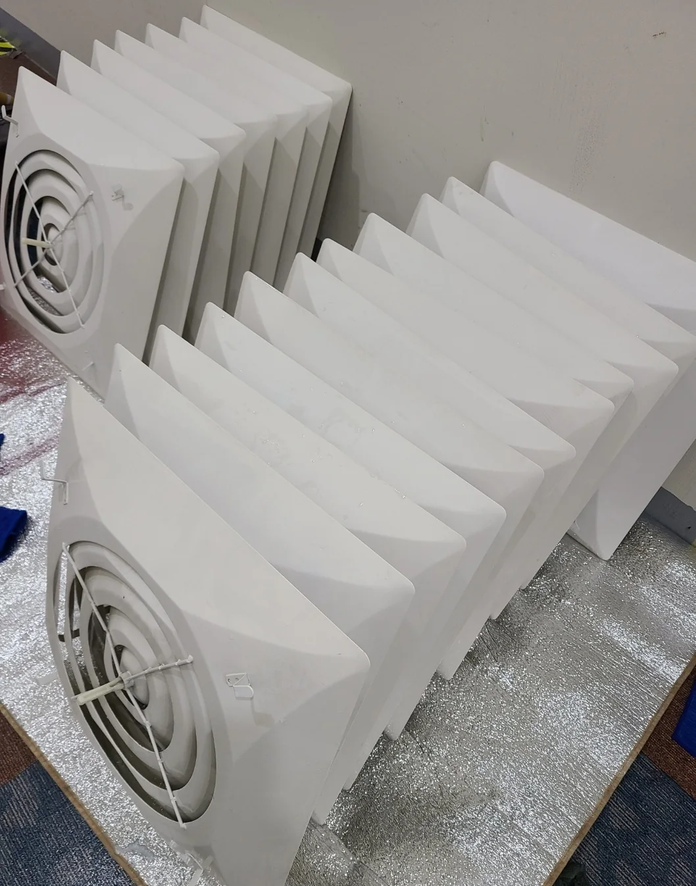
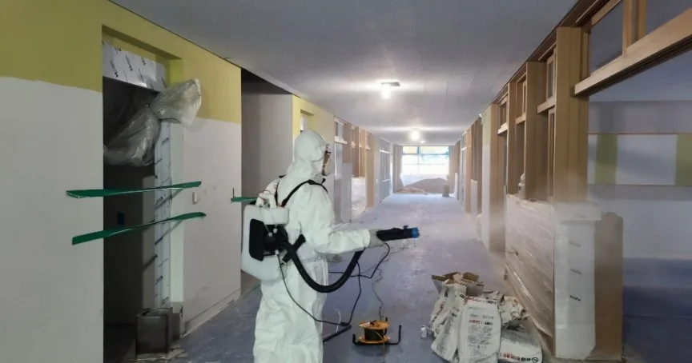
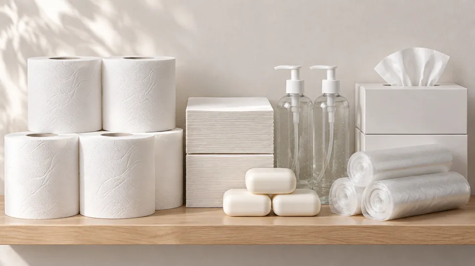
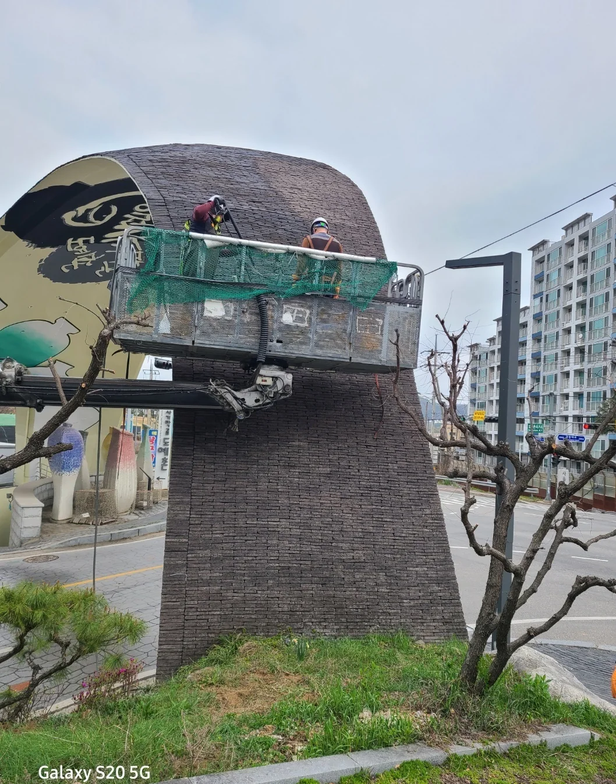
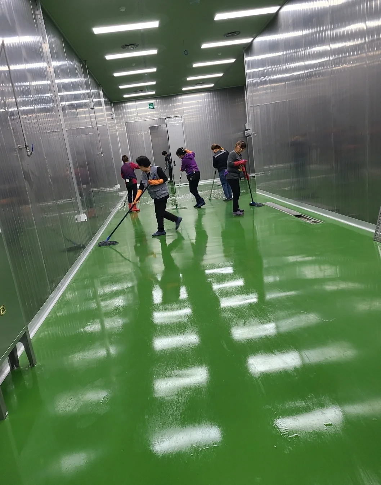
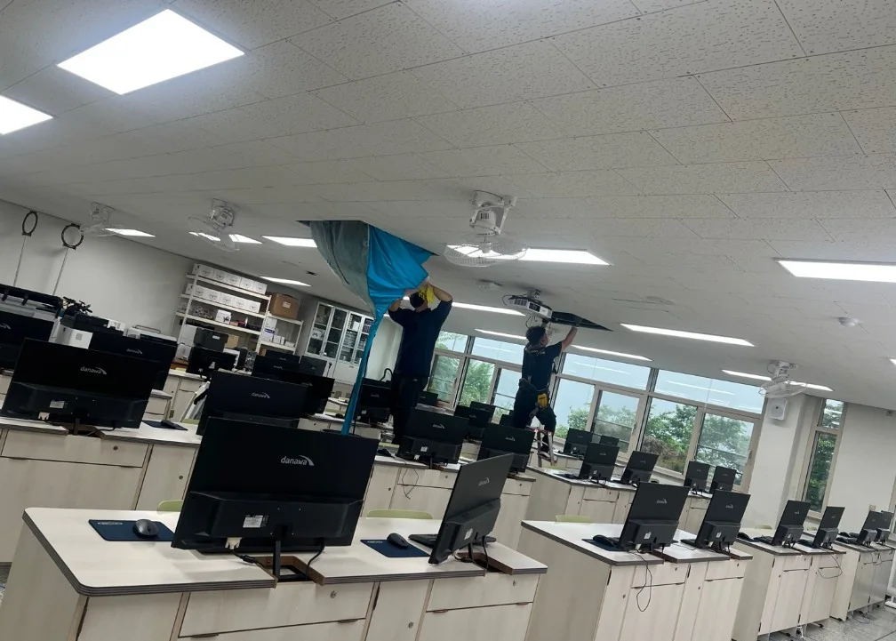
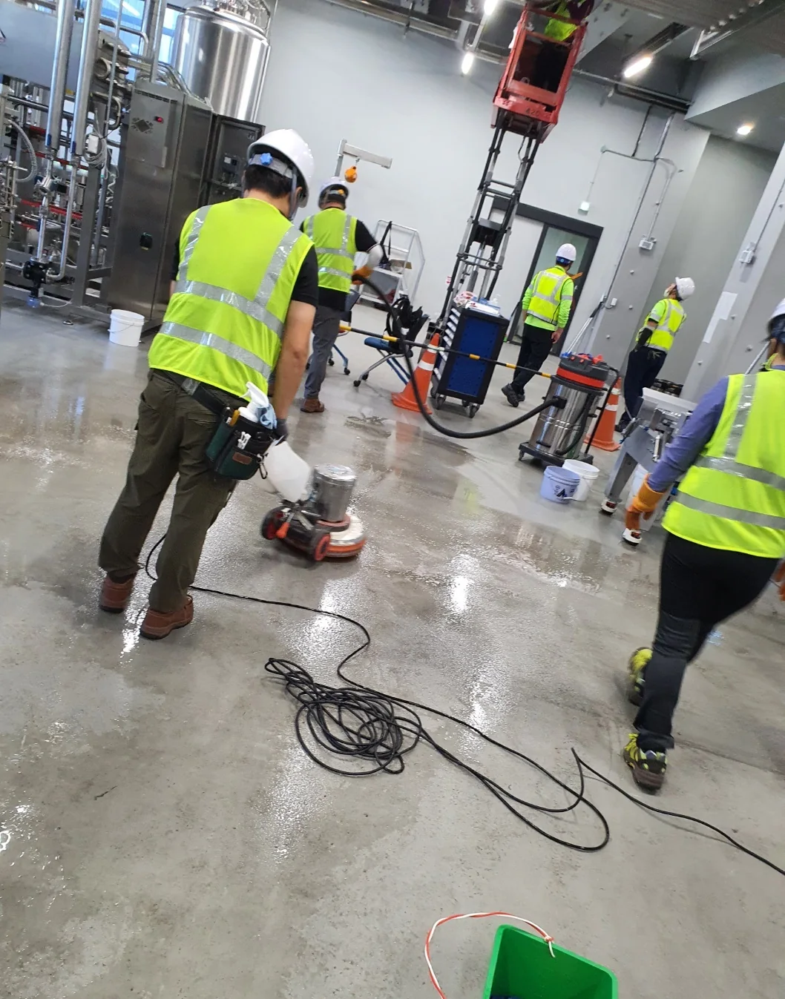
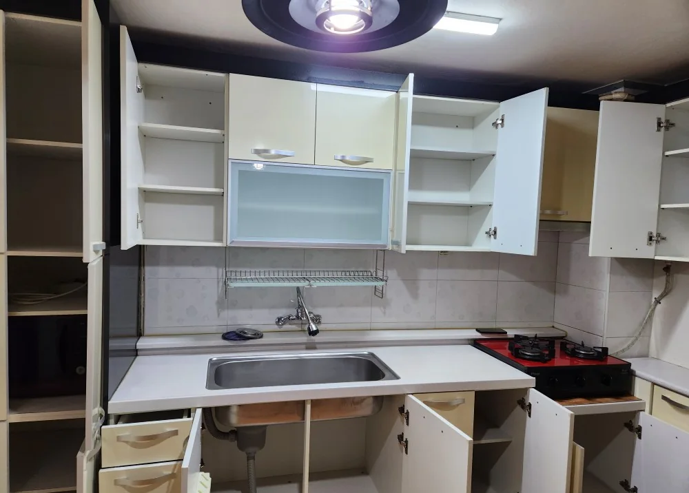
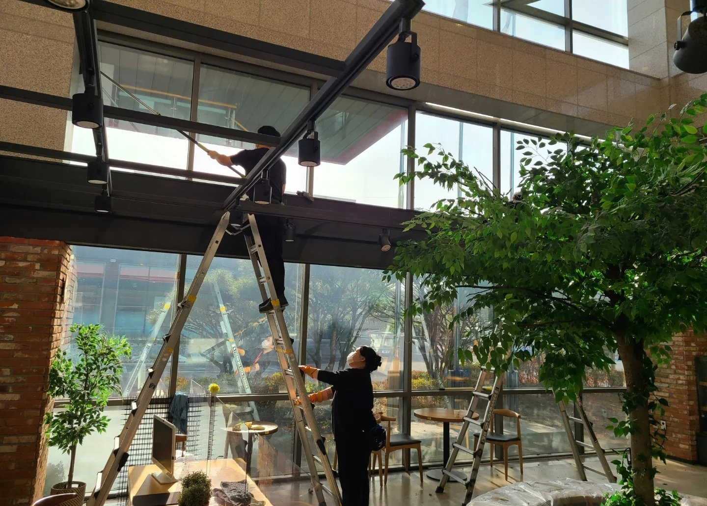

02

정성은 결과로 나타납니다.
그 결과를 만드는 업체, 이푸른티에스입니다.

2015년부터 사무실, 공장, 학교, 관공서의 바닥과 유리, 화장실을 청소해 왔습니다. 과장하지 않고, 맡은 공간을 매번 같은 기준으로 정리합니다.
청소는 또 다른 인테리어입니다
정기청소부터 특수청소, 에어컨, 외벽과 배수로, 방역소독, 위생 소모품 납품까지 한 곳에서 상담합니다.







작업 중에 휴대폰으로 남긴 기록을 그대로 모았습니다.













학교, 사무실, 공장, 빌딩, 식당의 정기소독과 실내소독, 해충방제와 모기퇴치를 진행합니다. 소독을 마친 뒤에는 소독필증을 발급해 드립니다.
소독필증 발급